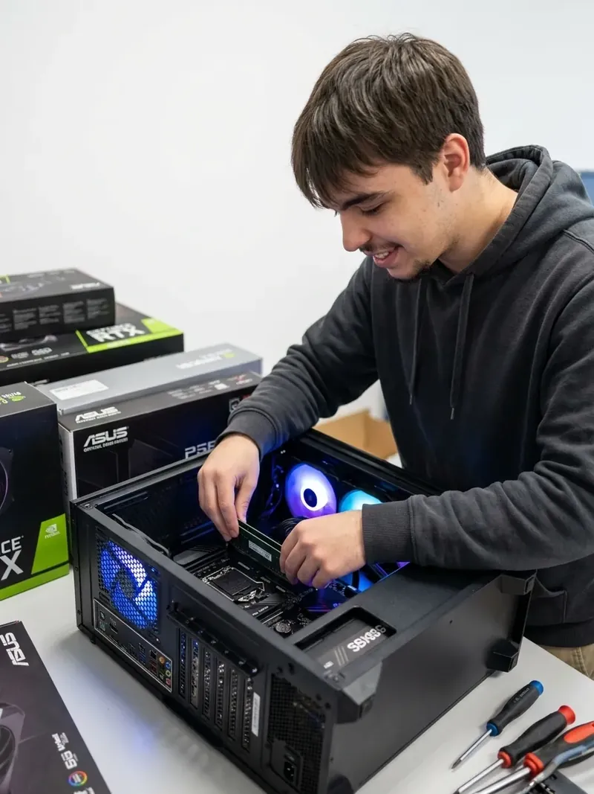

Automação de Faturas
Programa desenvolvido para a Futurévora capaz de processar faturas em formato PDF para otimização da gestão financeira.
$ whoami --verbose

Técnico de Cibersegurança | TI & Segurança de Redes
Começo sempre pela mesma pergunta: como posso tornar este sistema mais eficiente e seguro?
Sou um jovem profissional natural de Évora, focado em desenvolvimento de software, automação e cibersegurança. Tenho combinado formação técnica com experiência prática em projetos reais, desde sistemas de visão computacional até automação financeira.
$ cat percurso.log
Arrow4D
Centro de Formação Profissional de Évora
Escola Secundária de Vendas Novas
Casa do Povo de Vendas Novas
$ ls skills/
Linguagens e ferramentas com que construo, automatizo e protejo sistemas. Escolho cada uma pelo problema que resolve, não pela moda.
$ ls certificados/
$ ls projects/
O website que estás a ver neste momento — construído do zero com HTML, CSS e JavaScript puro (Vanilla).
Programa desenvolvido para a Futurévora capaz de processar faturas em formato PDF para otimização da gestão financeira.
Sistema integrado desenvolvido em Python focado na monitorização contínua e deteção inteligente em ambientes controlados.
Ferramenta técnica capaz de converter automaticamente ficheiros de imagens 2D em modelos tridimensionais (3D).
$ ping pedro --reach
Quer seja um novo projeto, automação de processos ou segurança do teu sistema, estou disponível para ajudar.